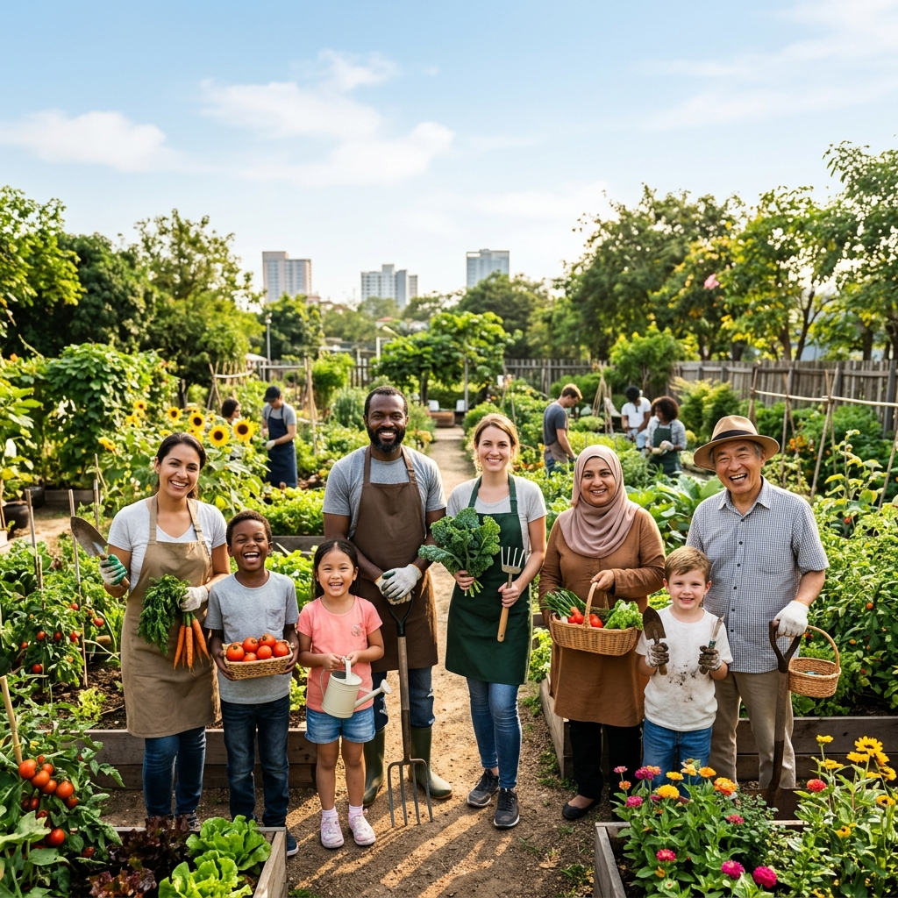

Together, We Grow.
Community For All.
Empowering communities through awareness, education, and sustainable practices. Join us in creating a positive impact.

Who We Are
Kaarn Social Welfare Foundation (KSWF) is committed to building an aware and responsible society. Through simple actions and meaningful initiatives, we aim to inspire positive change, promote sustainable choices, and encourage collective action for a better future.
Learn More About UsOur Core Focus Areas
The pillars of our community impact.
Social Awareness
Educating communities on critical social issues to build a more equitable and informed society.
Health & Hygiene
Promoting healthy lifestyles, sanitation awareness, and accessible healthcare initiatives.
Civic Sense
Fostering responsible citizenship and active participation in community development programs.
Environmental Responsibility
Advocating for sustainable practices, tree plantations, and protecting our natural resources.
Be A Part Of The Change
Your action matters. Whether you choose to donate or volunteer, you are helping us create a meaningful impact.
See Our Impact